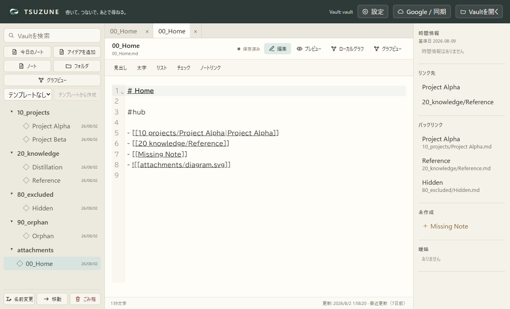
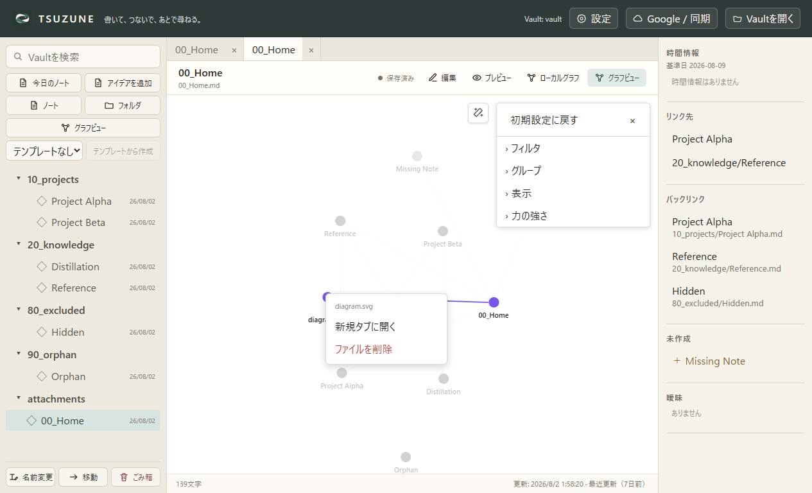
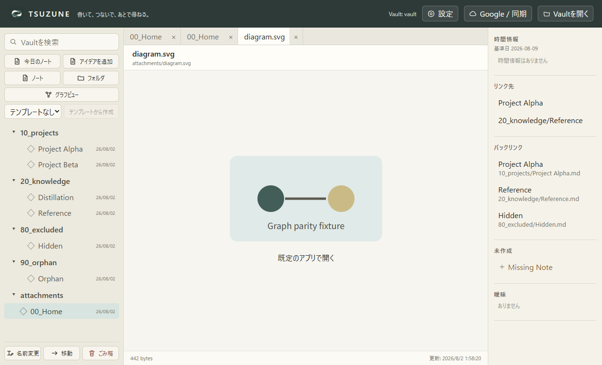

GP0-3b-f · 固定公開UI比較
noteは新規タブへ。attachmentもTSUZUNE内で開く。
Obsidian Desktop 1.13.4とTSUZUNEを同じfixture、Global Graph、1265×768、DPR 1、ライトテーマで比較しました。
partial: note生成は一致、Graph保持とattachment基準は残件
note操作


TSUZUNE attachment操作


比較
| 確認項目 | Obsidian | TSUZUNE | 判定 |
|---|---|---|---|
| 操作文言 | 新規タブに開く | 新規タブに開く | matched |
| 操作が有効 | true | true | matched |
| note用の新規タブを生成 | true | true | matched |
| 対象noteを新規タブで選択 | 00_Home.md | 00_Home | matched |
| 元のグラフを別タブとして保持 | true | false | different |
| attachmentを内部タブで開く | not-established | true | not-established |
未証明: Obsidian attachment実動作、TSUZUNEの元Graph tab保持、タブ復元・分割・並べ替え、物理マウス、完全な見た目。